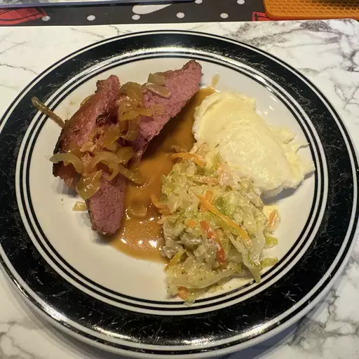

Braised corned beef brisket

Prep Time: 15 mins
Cook Time: 6 hrs 15 mins
Total Time: 6 hrs 30 mins
Servings: 6
Description
A thousand reviewers loved this paired down classic recipe. The corned beef simmers first, then potatoes, carrots, and cabbage join the pot so the cooking liquid infuses everything.
Ingredients
-
1 (5 pound) flat-cut corned beef brisket
-
1 tablespoon browning sauce (such as Kitchen Bouquet), or as desired
-
1 tablespoon vegetable oil
-
1 onion, sliced
-
6 cloves garlic, sliced
-
2 tablespoons water
Steps
-
Preheat the oven to 275 degrees F (135 degrees C).
-
Discard any flavoring packet from corned beef. Brush brisket with browning sauce on both sides.
-
Heat vegetable oil in a large skillet over medium-high heat and brown brisket on both sides in the hot oil, 5 to 8 minutes per side.
-
Place brisket on a rack set in a roasting pan. Scatter onion and garlic slices over brisket and add water to roasting pan. Cover pan tightly with aluminum foil.
-
Roast in the preheated oven until meat is tender, about 6 hours.
-
Serve hot and enjoy!
Home